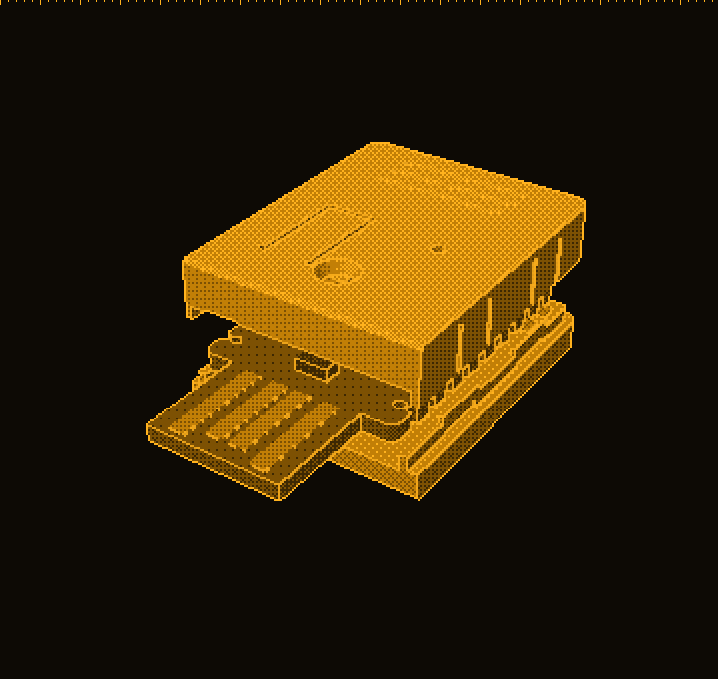

Board and part colours as in the maker’s photos. The case colour is not decided; the case is a provisional design, not printed yet.
Pick your OS
Try password filling, FIDO2 passkeys and computer sign-in.

Search9:41
ActivitiesMon 9:41▮▮ ◖
From my workbench
What I’m working on.
Dev log
Firmware 0.9: deleting a saved password now needs a press. Signed demo release v0.4 is out.
One installer for Linux and Windows, on a small read-only drive the key shows.
Signed firmware updates. The key refuses an update without a valid signature.
Press-only Linux login, if you opt in: empty password, then a press on the board.
Demo firmware for the Raspberry Pi Pico 2 and Waveshare RP2350-One, in a simulator.